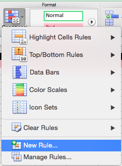
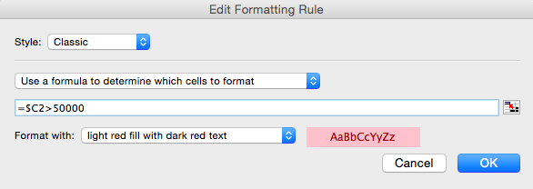
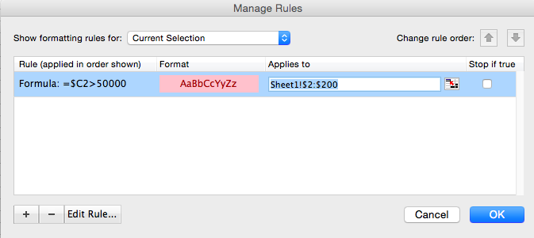
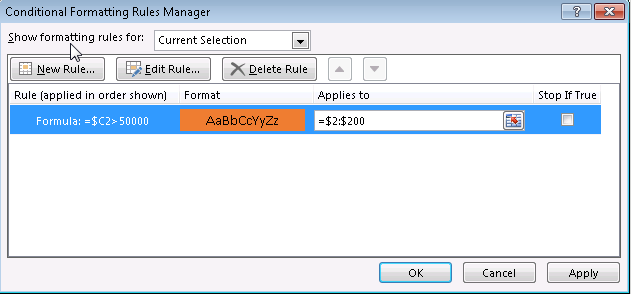
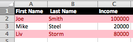
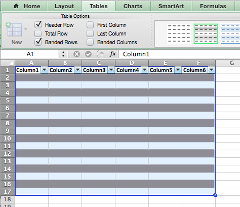
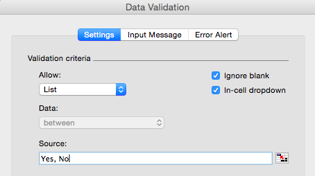
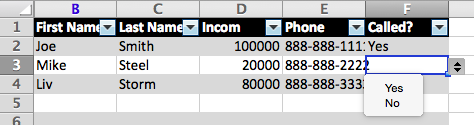

R and Excel: Making Your Data Dumps Pretty with XLConnect
Practical walkthroughs on machine learning, data exploration and finding insight.

Resources
Packages Used in this Walkthrough
- {XLConnect} Excel Connector for R
When it comes to sharing data, results, probabilities, one has many choices in terms of deliverable media. On one end of the spectrum you have raw text files, and on the other, numerous reporting engines, content management systems and web solutions.
As a data scientist, I get away with working and sharing comma delimited files (.csv) all day long, but there are times when customers want more. Excel is a great tool as everybody in analytics is familiar with it and it can do some pretty cool things inexpensively.
Instead of saving your data as a .csv or .tab file, you can leverage the .xlsx (native Excel format) just as easily and make a huge leap towards better looking reports.
Case 1: Conditional Formatting
The key is to prepare an Excel file in advance and use it as a base form to be called, duplicated, and populated from within R. So fire up your Excel application and open a new document.
Make the top row frozen. Go to: Layout —> Window —> Freeze Top Row on the Mac and View -> Freeze Panes -> Freeze Top Row on Windows (and this may still be different depending on your application version and operating system):

To emphasize the difference between a straight .csv file, let’s bold the entire top row, and change the font and background colors:
Home —> Font box. Select a dark background color and light font color.

Finally, add the following headers, First Name, Last Name, Income:

Now, let’s add some conditional formatting. Go to Home —> Format —> Conditional Formatting and select New Rule:

On the Mac, in the ‘New Formatting Rule’ box, select Classic:

Make it look like below with the following formula $C2>50000, this will trigger anytime C column has a higher value than 50000:

After you OK, fill in the Applies to section with Sheet1!$2:$200, this will apply the pink background color on rows 2-200 when the condition is met:

On Windows, in the Home -> Conditional Formatting -> New Rule, select Use a formula to determine which cells to format on Windows and enter $C2>50000:

Finally, make the rule apply to the entire row by adding in the Applies to section =$2:$200, along with a color selection in the Format box:

Don’t sweat the details as this isn’t a walkthrough about Excel, we’re just setting up our base file.
Hit Apply and OK. Save the file as sample.xlsx and close it.
Jumpint into R
Let’s create some data:
income_data <- data.frame('FirstName'=c('Joe','Mike','Liv'), 'LastName'=c('Smith','Steel','Storm'), 'Income'=c(100000,20000,80000))
income_data$FirstName <- as.character(income_data$FirstName)
income_data$LastName <- as.character(income_data$LastName)
head(income_data)
This create a basic income table:
## FirstName LastName Income
## 1 Joe Smith 100000
## 2 Mike Steel 20000
## 3 Liv Storm 80000
And let’s grab our Excel spreadsheet we just created:
library(XLConnect)
wb <- loadWorkbook('sample.xlsx')
xldf = readWorksheet(wb, sheet = getSheets(wb)[1])
All we did above is load XLConnect, call our saved sample.xlsx and loaded the first sheet of the spreadsheet (this implies you can load and write to many sheets on a spreadsheet - cool!). xldf is an actual data frame object that only contains our headers:
class(xldf)
## [1] "data.frame"
head(xldf)
## [1] First.Name X.Last.Name Income
## <0 rows> (or 0-length row.names)
Don’t worry about the weird header format, it won’t show on our final output. Here comes the interesting part, we’re going to cycle through each cell of interest and update it with our income_data:
for (id in 1:nrow(income_data)) {
colcount <- 1
for (nm in names(xldf)){
xldf[id,nm] <- income_data[id,colcount]
colcount <- colcount + 1
}
}
We can customize the sheet name with Salaries, write the sheet, and finally save it as income_data.xlsx (note startRow=2):
sheet_name <- "Salaries"
renameSheet(wb, sheet = getSheets(wb)[1], newName = sheet_name)
writeWorksheet(wb,xldf,sheet=getSheets(wb)[1],startRow=2,header=F)
saveWorkbook(wb,'income_data.xlsx')
And this what the final spreadsheet looks like:

Case 2: Hidden fields and drop down cells
This isn’t really R related but it has come in handy for a recent project. We created call sheets for operators to use containing an ID, name and phone number on each row along with a drop-down list indicating how the call went. We also wanted to have the user ID on the sheet but not visible to the operator. And this is what we came up with…
Let’s start a new spreadsheet. Here will add a drop down column for each row, every-other-row background formatting, and a hidden column for our IDs.
First, let’s format the sheet in a visually appealing way. Highlight an area of 6 columns by 10 or 20 rows. Select Tables -> Table Styles and choose a color scheme you like.

Swap the generic header text with the following headers: ID, First Name, Last Name, Income, Phone, Called. Also highlight the first row and format it like we did in Case 1.

To hide a row, simply resize it to nothing on the tool bar… that simple. To add a drop down, select the cell you want it in (F2) and navigate to Data -> Data Validation -> Data Validation. In Allow: select List and in Source enter Yes, No (separate both words with a comma):

Copy the F2 cell with our drop down to all other cells in that column. You table should like something like this:

Save your spreadsheet as sample2.xlsx and close it.
Jumpint into R
Let’s add IDs and phone numbers to our income data set:
income_data <- data.frame('ID'=c(1,2,3), 'FirstName'=c('Joe','Mike','Liv'), 'LastName'=c('Smith','Steel','Storm'), 'Income'=c(100000,20000,80000), 'PhoneNumber'=c('888-888-1111','888-888-2222','888-888-3333'))
income_data$FirstName <- as.character(income_data$FirstName)
income_data$LastName <- as.character(income_data$LastName)
income_data$PhoneNumber <- as.character(income_data$PhoneNumber)
head(income_data)
## ID FirstName LastName Income PhoneNumber
## 1 1 Joe Smith 100000 888-888-1111
## 2 2 Mike Steel 20000 888-888-2222
## 3 3 Liv Storm 80000 888-888-3333
library(XLConnect)
wb <- loadWorkbook('sample2.xlsx')
xldf = readWorksheet(wb, sheet = getSheets(wb)[1])[1:5]
for (id in 1:nrow(income_data)) {
colcount <- 1
for (nm in names(xldf)[1:5]) # only headers 1 through 5, 6 is the Called? field
{
xldf[id,nm] <- income_data[id,colcount]
colcount <- colcount + 1
}
}
We’ll save it as income_data2.xlsx:
sheet_name <- "Salaries"
renameSheet(wb, sheet = getSheets(wb)[1], newName = sheet_name)
writeWorksheet(wb,xldf,sheet=getSheets(wb)[1],startRow=2,header=F)
saveWorkbook(wb,'income_data2.xlsx')
Here is a look at our final spreadsheet. It is ready do be distributed with the drop downs all functional and the ID column hidden:

# Case 1
income_data <- data.frame('FirstName'=c('Joe','Mike','Liv'), 'LastName'=c('Smith','Steel','Storm'), 'Income'=c(100000,20000,80000))
income_data$FirstName <- as.character(income_data$FirstName)
income_data$LastName <- as.character(income_data$LastName)
head(income_data)
# load XLConnect and grab a copy of sample.xlsx
library(XLConnect)
wb <- loadWorkbook('sample.xlsx')
xldf = readWorksheet(wb, sheet = getSheets(wb)[1])
class(xldf)
head(xldf)
# replace XL cells with new content
for (id in 1:nrow(income_data)) {
colcount <- 1
for (nm in names(xldf)[1:3]){
xldf[id,nm] <- income_data[id,colcount]
colcount <- colcount + 1
}
}
# save XL sheet and file
sheet_name <- "Salaries"
renameSheet(wb, sheet = getSheets(wb)[1], newName = sheet_name)
writeWorksheet(wb,xldf,sheet=getSheets(wb)[1],startRow=2,header=F)
saveWorkbook(wb,'income_data.xlsx')
# Case 2
income_data <- data.frame('ID'=c(1,2,3), 'FirstName'=c('Joe','Mike','Liv'), 'LastName'=c('Smith','Steel','Storm'), 'Income'=c(100000,20000,80000), 'PhoneNumber'=c('888-888-1111','888-888-2222','888-888-3333'))
income_data$FirstName <- as.character(income_data$FirstName)
income_data$LastName <- as.character(income_data$LastName)
income_data$PhoneNumber <- as.character(income_data$PhoneNumber)
head(income_data)
library(XLConnect)
wb <- loadWorkbook('sample2.xlsx')
xldf = readWorksheet(wb, sheet = getSheets(wb)[1])
for (id in 1:nrow(income_data)) {
colcount <- 1
for (nm in names(xldf)[1:5]){
xldf[id,nm] <- income_data[id,colcount]
colcount <- colcount + 1
}
}
# save XL sheet and file
sheet_name <- "Salaries"
renameSheet(wb, sheet = getSheets(wb)[1], newName = sheet_name)
writeWorksheet(wb,xldf,sheet=getSheets(wb)[1],startRow=2,header=F)
saveWorkbook(wb,'income_data.xlsx')